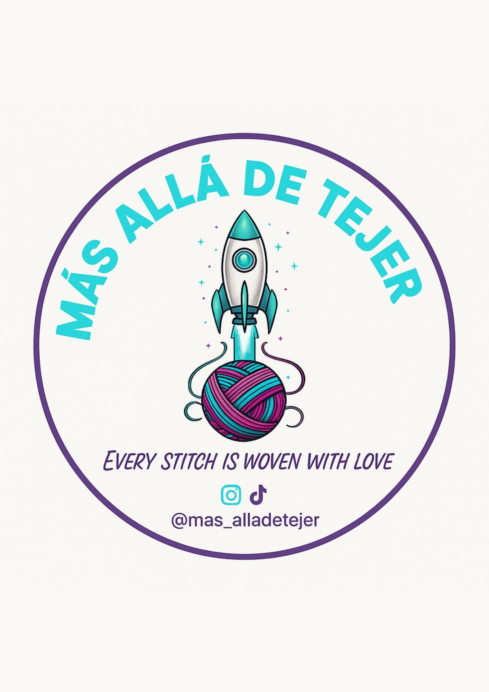

MÁS QUE HILOS
Hay un universo
en cada creación.
En Más Allá de Tejer creemos que lo hecho a mano tiene una magia especial: guarda tiempo, intención y cariño. Muy pronto encontrarás aquí nuestras creaciones favoritas.
CREACIONES HECHAS A MANO
Cada puntada transforma hilos, imaginación y mucho amor en piezas únicas, creadas especialmente para ti.

Cada puntada,
una pequeña aventura.
IMAGINACIÓN
✦COLOR
✦HECHO A MANO
✦AMOR
MÁS QUE HILOS
En Más Allá de Tejer creemos que lo hecho a mano tiene una magia especial: guarda tiempo, intención y cariño. Muy pronto encontrarás aquí nuestras creaciones favoritas.
PRÓXIMAMENTE
Mientras preparamos esta galería, síguenos para conocer cada nueva aventura tejida.
@mas_alladetejer ↗